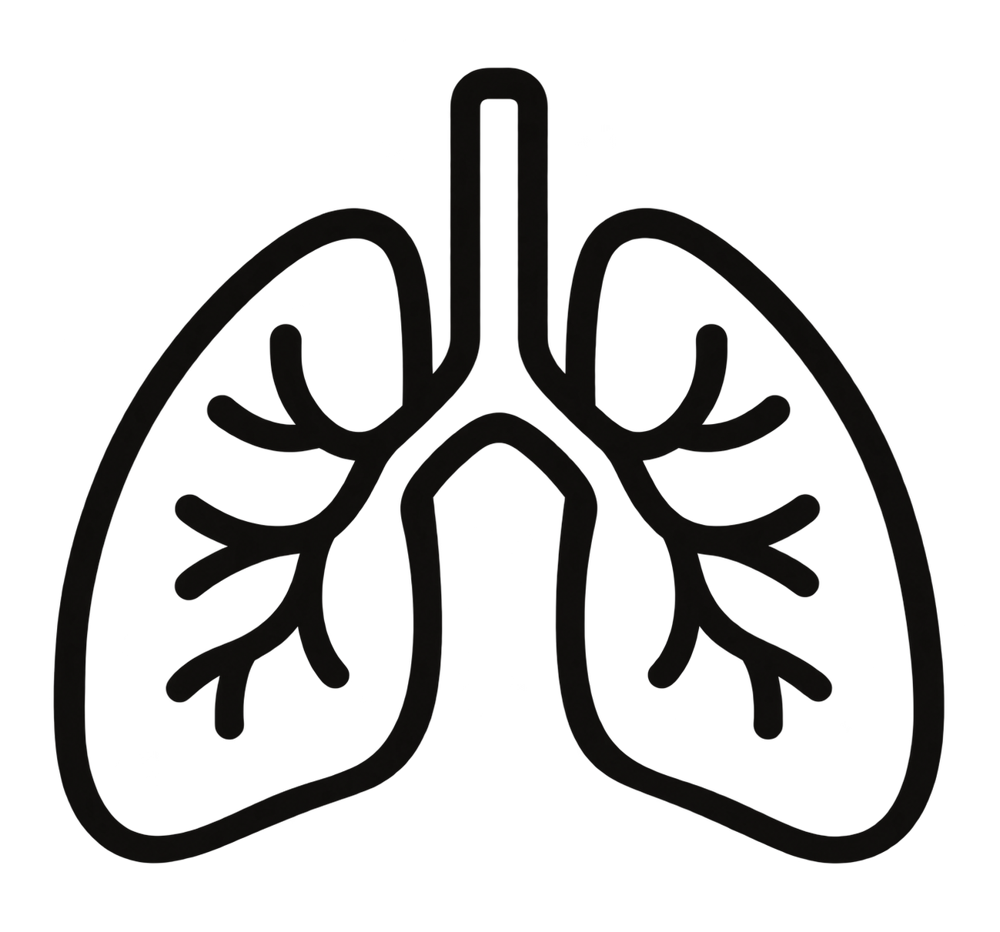
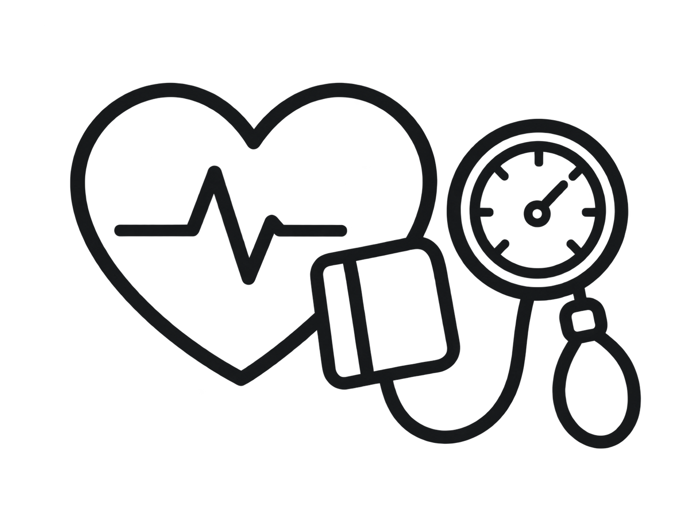
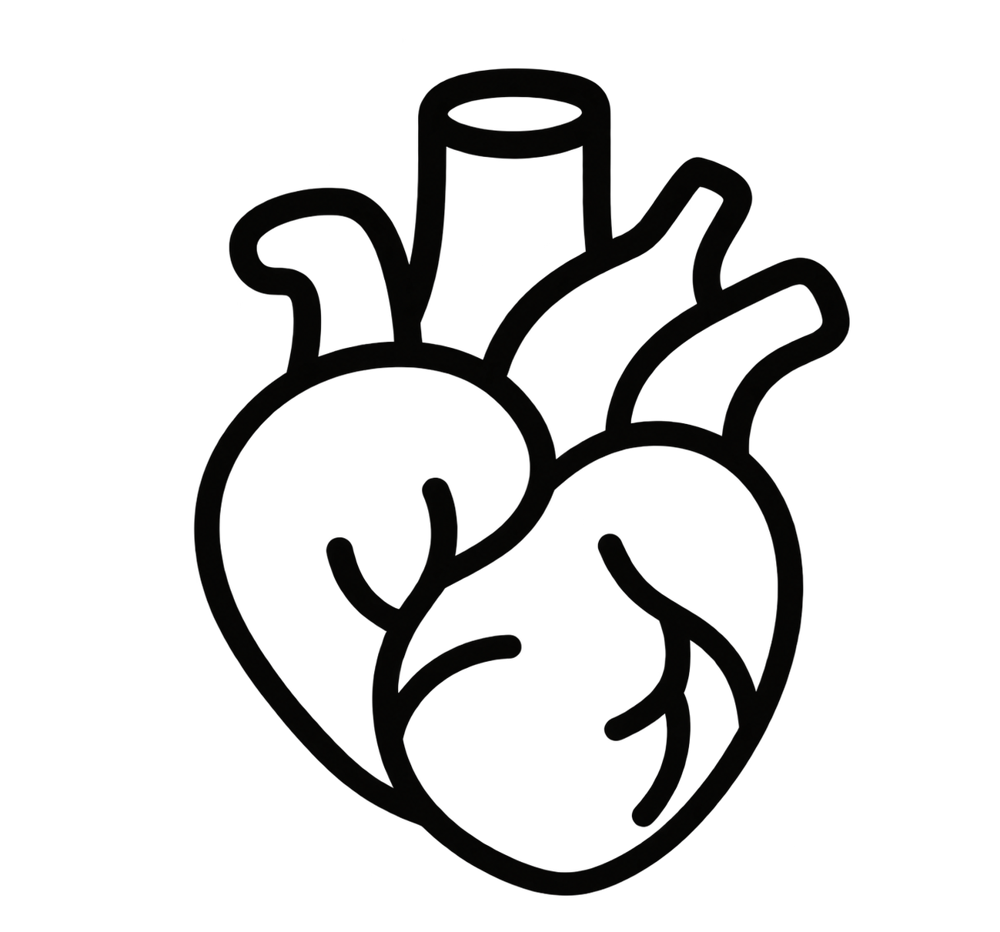

受付時間
午前 09:00〜11:00
午後 12:00〜17:00午前 8:00〜11:00
午後 12:00〜17:00
| 診療時間 | 月 | 火 | 水 | 木 | 金 | 土 | 日 |
|---|---|---|---|---|---|---|---|
| 午前 09:00〜12:00 | ● | ● | ● | ／ | ● | ● | ／ |
| 午後 13:00〜18:00 | ● | ● | ● | ／ | ● | ／ | ／ |
午前 09:00〜11:00
午後 12:00〜17:00午前 8:00〜11:00
午後 12:00〜17:00
● 木曜日● 土曜日午後● 日曜日木曜・土曜午後・日曜
祝祭日も診療を行っておりますが、休診日もございます。事前にご確認ください。

こんにちは。佐藤医院の院長、佐藤太郎と申します。当院のホームページをご覧いただき、ありがとうございます。
佐藤医院では、「地域に根ざした医療」をモットーに、患者様一人ひとりに寄り添った医療を提供することを目指しております。日常的な健康管理から生活習慣病の予防、さらには専門的な診断や治療まで、幅広い内科診療を行い、地域の皆様の健康を支える役割を担っていきたいと考えております。
私たちは、患者様の不安を少しでも軽減し、安心して診療を受けていただけるよう、わかりやすい説明と丁寧な対応を心掛けております。
佐藤医院 院長 佐藤 太郎
当院では、地域の皆様の健康を支えるため、幅広い内科診療を行っております。日常的な体調管理から各種の検査や治療に至るまで、どんなお悩みもお気軽にご相談ください。
風邪や発熱、喉の痛み、頭痛、腹痛などの症状を中心に、一般的な体調不良の診療を行っています。また、原因不明の不調や軽い症状であっても、早期診断に努めております。
風邪や発熱、喉の痛み、頭痛、腹痛などの症状を中心に、一般的な体調不良の診療を行っています。

咳、息切れ、胸の痛みなど、呼吸器系の症状について診療を行っています。季節性の喘息やアレルギー性鼻炎、慢性閉塞性肺疾患（COPD）などにも対応し、適切な治療と予防をサポートします。
咳、息切れ、胸の痛みなど、呼吸器系の症状について診療を行っています。


高血圧症、糖尿病、脂質異常症（高コレステロール血症）、メタボリック症候群など、生活習慣病の診断と治療を行います。病気の進行を予防し、健康維持のための生活指導や薬物療法を行います。
高血圧症、糖尿病、脂質異常症など、生活習慣病の診断と治療を行います。
胃痛、胃もたれ、胸やけ、便秘、下痢などの消化器系の不調に対応しています。必要に応じて胃カメラや超音波検査などを実施し、胃腸の健康をサポートします。
胃痛、胃もたれ、胸やけ、便秘、下痢などの消化器系の不調に対応しています。

佐藤医院は、地域の皆様の健康を守り、より良い生活をサポートすることを使命としています。創立以来、私たちは「患者様一人ひとりに寄り添った診療」を大切にし、地域密着型の医療を提供してまいりました。
今後も、皆様の健康維持と病気予防に貢献するため、より良い医療サービスを提供し続けることをお約束いたします。
詳しく見る ＞地域の皆様に安心してご来院いただけるよう、スタッフ一同、誠心誠意対応いたします。それぞれの専門性と温かさを活かし、皆様の健康を支えるパートナーとしてお力になれるよう努めてまいります。
地域の皆様に安心してご来院いただけるよう、スタッフ一同、誠心誠意対応いたします。

どんな小さな不調でもお気軽にご相談ください。患者様一人ひとりに寄り添い、安心していただける医療を提供してまいります。
患者様にとって気軽に相談できる「かかりつけ医」を目指しています。どんな小さな不安でも、まずはご相談ください。

患者様が少しでも安心して診療を受けられるよう、笑顔と丁寧な対応を心掛けています。何か不安なことがあれば、いつでもお声がけください。
安心して治療を受けていただけるよう、いつも笑顔でお待ちしています。

正確で迅速な検査を心掛け、診療がスムーズに進むよう努めています。検査についてご不明な点があれば、お気軽にお尋ねください。
検査への不安を少しでも和らげられるよう、優しく丁寧な対応を心がけています。

患者様を笑顔でお迎えし、安心して受診していただけるよう、分かりやすく丁寧な対応を心掛けています。受付やお会計などで分からないことがあれば、お気軽にお声がけください。
皆様に気持ちよくご利用いただけるよう、笑顔と真心を大切にしております。
〒123-4567
東京都台東区上野0-0-0
JR上野駅より徒歩5分
当院専用 無料駐車場10台分
TEL：00-0000-0000